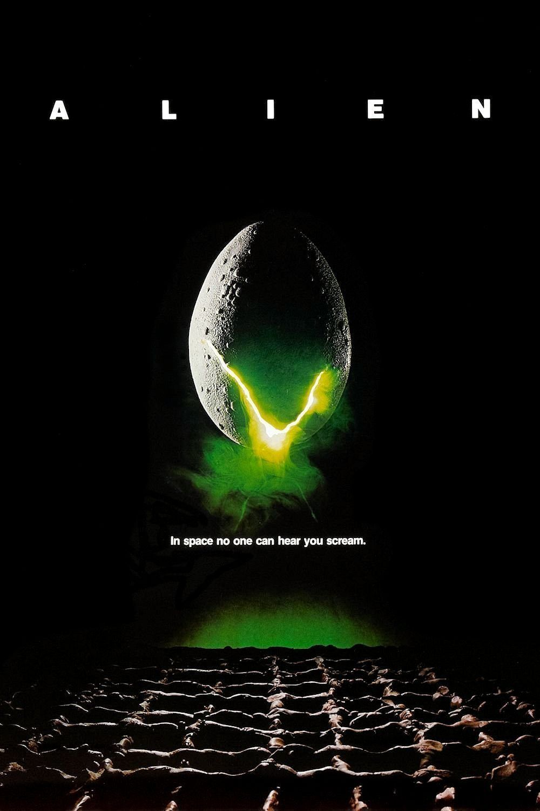

异形（Alien，1979）
内容简介：
- 未来的世界，人类已能轻松穿梭于星际之间，在太空中展开商业活动。“诺史莫”是在太空活动的众多星际商业运输船之一。一次，它完成任务满载太空矿石返航地球时，突然收到了一组奇怪的信号，由于这可能是求救信号，飞船接到指令前往信号源地进行搜救。
- 经过一段飞行后，飞船终于抵达信号源发出的地方。船员们发现此处果然有一艘坠毁的飞船，只是，经过一番搜索，他们发现该船的船员们都早已死亡，化为化石。此时，留在“诺史莫”号的第三指挥官里普利已经破译出该信号并不是求救信号，而是警告信号！队员的生死搏斗开始了！
短评：
- 这一集最注重气氛，即使只有一只异形，你也会感觉他无所不在... ——大宸
可播放资源：
- 爱奇艺视频 VIP免费观看
- https://www.iqiyi.com/v_19rrk0w4qk.html?vfm=m_331_dbdy&fv=4904d94982104144a1548dd9040df241